Predicting Onset/Diagnosis of Chronic Conditions, Diabetes¶
toc: true
badges: true
comments: true
sticky_rank: 1
categories: [Big Data , h2o]
National Institute of Diabetes and Digestive and Kidney Diseases, https://www.niddk.nih.gov/¶

Credit: code from https://www.kaggle.com/sudalairajkumar/getting-started-with-h2o
import h2o
import time
import seaborn
import itertools
import numpy as np
import pandas as pd
import seaborn as sns
import matplotlib.pyplot as plt
from h2o.estimators.glm import H2OGeneralizedLinearEstimator
from h2o.estimators.gbm import H2OGradientBoostingEstimator
from h2o.estimators.random_forest import H2ORandomForestEstimator
%matplotlib inline
h2o.init()
Checking whether there is an H2O instance running at http://localhost:54321 . connected.
| H2O_cluster_uptime: | 9 mins 06 secs |
| H2O_cluster_timezone: | Etc/UTC |
| H2O_data_parsing_timezone: | UTC |
| H2O_cluster_version: | 3.30.1.3 |
| H2O_cluster_version_age: | 1 month and 10 days |
| H2O_cluster_name: | H2O_from_python_unknownUser_6cf4p5 |
| H2O_cluster_total_nodes: | 1 |
| H2O_cluster_free_memory: | 3.179 Gb |
| H2O_cluster_total_cores: | 2 |
| H2O_cluster_allowed_cores: | 2 |
| H2O_cluster_status: | locked, healthy |
| H2O_connection_url: | http://localhost:54321 |
| H2O_connection_proxy: | {"http": null, "https": null} |
| H2O_internal_security: | False |
| H2O_API_Extensions: | Amazon S3, XGBoost, Algos, AutoML, Core V3, TargetEncoder, Core V4 |
| Python_version: | 3.6.9 final |
diabetes_df = h2o.import_file("https://raw.githubusercontent.com/davidrkearney/colab-notebooks/main/datasets/diabetes.csv", destination_frame="diabetes_df")
Parse progress: |█████████████████████████████████████████████████████████| 100%
import pandas as pd
url = 'https://raw.githubusercontent.com/davidrkearney/colab-notebooks/main/datasets/diabetes.csv'
df = pd.read_csv(url, error_bad_lines=False)
df
| Pregnancies | Glucose | BloodPressure | SkinThickness | Insulin | BMI | DiabetesPedigreeFunction | Age | Outcome | |
|---|---|---|---|---|---|---|---|---|---|
| 0 | 6 | 148 | 72 | 35 | 0 | 33.6 | 0.627 | 50 | 1 |
| 1 | 1 | 85 | 66 | 29 | 0 | 26.6 | 0.351 | 31 | 0 |
| 2 | 8 | 183 | 64 | 0 | 0 | 23.3 | 0.672 | 32 | 1 |
| 3 | 1 | 89 | 66 | 23 | 94 | 28.1 | 0.167 | 21 | 0 |
| 4 | 0 | 137 | 40 | 35 | 168 | 43.1 | 2.288 | 33 | 1 |
| ... | ... | ... | ... | ... | ... | ... | ... | ... | ... |
| 763 | 10 | 101 | 76 | 48 | 180 | 32.9 | 0.171 | 63 | 0 |
| 764 | 2 | 122 | 70 | 27 | 0 | 36.8 | 0.340 | 27 | 0 |
| 765 | 5 | 121 | 72 | 23 | 112 | 26.2 | 0.245 | 30 | 0 |
| 766 | 1 | 126 | 60 | 0 | 0 | 30.1 | 0.349 | 47 | 1 |
| 767 | 1 | 93 | 70 | 31 | 0 | 30.4 | 0.315 | 23 | 0 |
768 rows × 9 columns
diabetes_df.describe()
Rows:768
Cols:9
| Pregnancies | Glucose | BloodPressure | SkinThickness | Insulin | BMI | DiabetesPedigreeFunction | Age | Outcome | |
|---|---|---|---|---|---|---|---|---|---|
| type | int | int | int | int | int | real | real | int | int |
| mins | 0.0 | 0.0 | 0.0 | 0.0 | 0.0 | 0.0 | 0.078 | 21.0 | 0.0 |
| mean | 3.845052083333336 | 120.89453125 | 69.10546874999994 | 20.536458333333357 | 79.79947916666666 | 31.99257812500003 | 0.4718763020833334 | 33.240885416666615 | 0.3489583333333333 |
| maxs | 17.0 | 199.0 | 122.0 | 99.0 | 846.0 | 67.1 | 2.42 | 81.0 | 1.0 |
| sigma | 3.36957806269887 | 31.972618195136224 | 19.355807170644777 | 15.952217567727642 | 115.24400235133803 | 7.884160320375441 | 0.331328595012775 | 11.760231540678689 | 0.47695137724279896 |
| zeros | 111 | 5 | 35 | 227 | 374 | 11 | 0 | 0 | 500 |
| missing | 0 | 0 | 0 | 0 | 0 | 0 | 0 | 0 | 0 |
| 0 | 6.0 | 148.0 | 72.0 | 35.0 | 0.0 | 33.6 | 0.627 | 50.0 | 1.0 |
| 1 | 1.0 | 85.0 | 66.0 | 29.0 | 0.0 | 26.6 | 0.351 | 31.0 | 0.0 |
| 2 | 8.0 | 183.0 | 64.0 | 0.0 | 0.0 | 23.3 | 0.672 | 32.0 | 1.0 |
| 3 | 1.0 | 89.0 | 66.0 | 23.0 | 94.0 | 28.1 | 0.167 | 21.0 | 0.0 |
| 4 | 0.0 | 137.0 | 40.0 | 35.0 | 168.0 | 43.1 | 2.288 | 33.0 | 1.0 |
| 5 | 5.0 | 116.0 | 74.0 | 0.0 | 0.0 | 25.6 | 0.201 | 30.0 | 0.0 |
| 6 | 3.0 | 78.0 | 50.0 | 32.0 | 88.0 | 31.0 | 0.248 | 26.0 | 1.0 |
| 7 | 10.0 | 115.0 | 0.0 | 0.0 | 0.0 | 35.3 | 0.134 | 29.0 | 0.0 |
| 8 | 2.0 | 197.0 | 70.0 | 45.0 | 543.0 | 30.5 | 0.158 | 53.0 | 1.0 |
| 9 | 8.0 | 125.0 | 96.0 | 0.0 | 0.0 | 0.0 | 0.232 | 54.0 | 1.0 |
for col in diabetes_df.columns:
diabetes_df[col].hist()
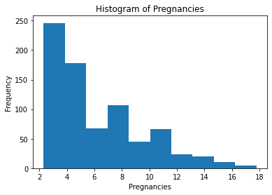
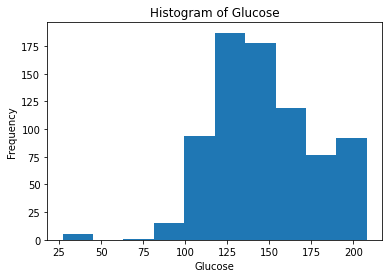
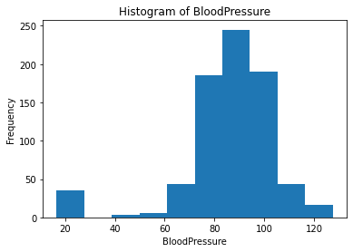
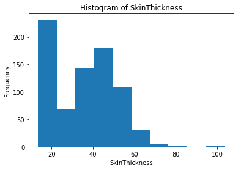
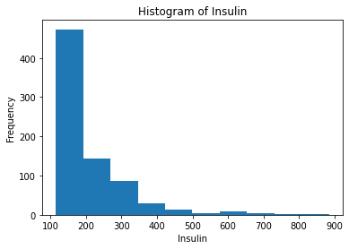
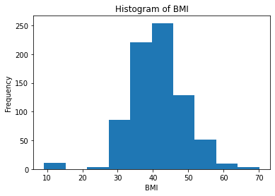
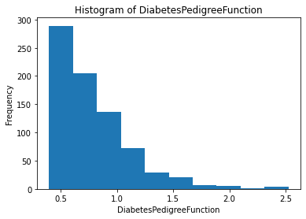
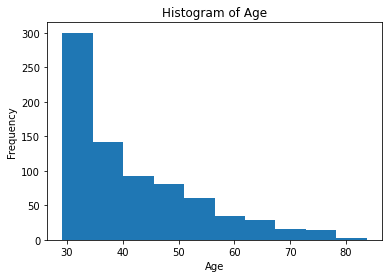
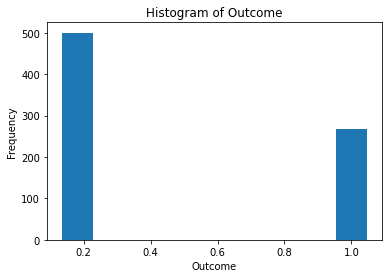
plt.figure(figsize=(10,10))
corr = diabetes_df.cor().as_data_frame()
corr.index = diabetes_df.columns
sns.heatmap(corr, annot = True, cmap='RdYlGn', vmin=-1, vmax=1)
plt.title("Correlation Heatmap", fontsize=16)
plt.show()
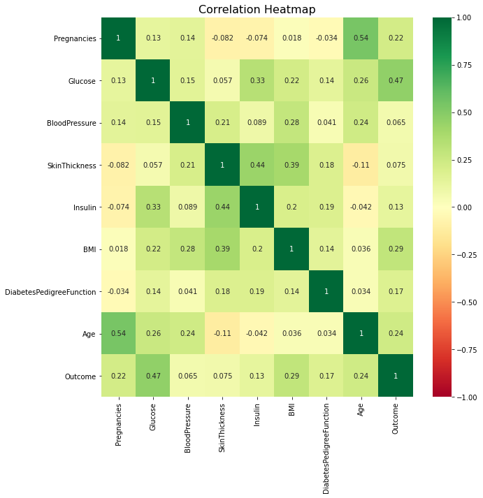
train, valid, test = diabetes_df.split_frame(ratios=[0.6,0.2], seed=1234)
response = "Outcome"
train[response] = train[response].asfactor()
valid[response] = valid[response].asfactor()
test[response] = test[response].asfactor()
print("Number of rows in train, valid and test set : ", train.shape[0], valid.shape[0], test.shape[0])
Number of rows in train, valid and test set : 465 148 155
predictors = diabetes_df.columns[:-1]
gbm = H2OGradientBoostingEstimator()
gbm.train(x=predictors, y=response, training_frame=train)
gbm Model Build progress: |███████████████████████████████████████████████| 100%
print(gbm)
Model Details
=============
H2OGradientBoostingEstimator : Gradient Boosting Machine
Model Key: GBM_model_python_1604778858031_53
Model Summary:
| number_of_trees | number_of_internal_trees | model_size_in_bytes | min_depth | max_depth | mean_depth | min_leaves | max_leaves | mean_leaves | ||
|---|---|---|---|---|---|---|---|---|---|---|
| 0 | 50.0 | 50.0 | 11552.0 | 5.0 | 5.0 | 5.0 | 6.0 | 23.0 | 13.68 |
ModelMetricsBinomial: gbm
** Reported on train data. **
MSE: 0.05394537414652564
RMSE: 0.2322614349101582
LogLoss: 0.21164045617145613
Mean Per-Class Error: 0.05419671999032927
AUC: 0.9899262602248459
AUCPR: 0.9845164166436653
Gini: 0.9798525204496917
Confusion Matrix (Act/Pred) for max f1 @ threshold = 0.46220528851885034:
| 0 | 1 | Error | Rate | ||
|---|---|---|---|---|---|
| 0 | 0 | 290.0 | 9.0 | 0.0301 | (9.0/299.0) |
| 1 | 1 | 14.0 | 152.0 | 0.0843 | (14.0/166.0) |
| 2 | Total | 304.0 | 161.0 | 0.0495 | (23.0/465.0) |
Maximum Metrics: Maximum metrics at their respective thresholds
| metric | threshold | value | idx | |
|---|---|---|---|---|
| 0 | max f1 | 0.462205 | 0.929664 | 150.0 |
| 1 | max f2 | 0.323826 | 0.944836 | 176.0 |
| 2 | max f0point5 | 0.548022 | 0.967302 | 132.0 |
| 3 | max accuracy | 0.506976 | 0.950538 | 142.0 |
| 4 | max precision | 0.983850 | 1.000000 | 0.0 |
| 5 | max recall | 0.173383 | 1.000000 | 227.0 |
| 6 | max specificity | 0.983850 | 1.000000 | 0.0 |
| 7 | max absolute_mcc | 0.506976 | 0.892066 | 142.0 |
| 8 | max min_per_class_accuracy | 0.372134 | 0.939799 | 163.0 |
| 9 | max mean_per_class_accuracy | 0.370458 | 0.945803 | 164.0 |
| 10 | max tns | 0.983850 | 299.000000 | 0.0 |
| 11 | max fns | 0.983850 | 165.000000 | 0.0 |
| 12 | max fps | 0.018713 | 299.000000 | 399.0 |
| 13 | max tps | 0.173383 | 166.000000 | 227.0 |
| 14 | max tnr | 0.983850 | 1.000000 | 0.0 |
| 15 | max fnr | 0.983850 | 0.993976 | 0.0 |
| 16 | max fpr | 0.018713 | 1.000000 | 399.0 |
| 17 | max tpr | 0.173383 | 1.000000 | 227.0 |
Gains/Lift Table: Avg response rate: 35.70 %, avg score: 35.71 %
| group | cumulative_data_fraction | lower_threshold | lift | cumulative_lift | response_rate | score | cumulative_response_rate | cumulative_score | capture_rate | cumulative_capture_rate | gain | cumulative_gain | kolmogorov_smirnov | |
|---|---|---|---|---|---|---|---|---|---|---|---|---|---|---|
| 0 | 1 | 0.010753 | 0.964760 | 2.801205 | 2.801205 | 1.000000 | 0.970134 | 1.000000 | 0.970134 | 0.030120 | 0.030120 | 180.120482 | 180.120482 | 0.030120 |
| 1 | 2 | 0.021505 | 0.959842 | 2.801205 | 2.801205 | 1.000000 | 0.963441 | 1.000000 | 0.966788 | 0.030120 | 0.060241 | 180.120482 | 180.120482 | 0.060241 |
| 2 | 3 | 0.030108 | 0.948198 | 2.801205 | 2.801205 | 1.000000 | 0.952824 | 1.000000 | 0.962798 | 0.024096 | 0.084337 | 180.120482 | 180.120482 | 0.084337 |
| 3 | 4 | 0.040860 | 0.944016 | 2.801205 | 2.801205 | 1.000000 | 0.946246 | 1.000000 | 0.958442 | 0.030120 | 0.114458 | 180.120482 | 180.120482 | 0.114458 |
| 4 | 5 | 0.051613 | 0.940243 | 2.801205 | 2.801205 | 1.000000 | 0.942268 | 1.000000 | 0.955073 | 0.030120 | 0.144578 | 180.120482 | 180.120482 | 0.144578 |
| 5 | 6 | 0.101075 | 0.910936 | 2.801205 | 2.801205 | 1.000000 | 0.924669 | 1.000000 | 0.940194 | 0.138554 | 0.283133 | 180.120482 | 180.120482 | 0.283133 |
| 6 | 7 | 0.150538 | 0.868553 | 2.801205 | 2.801205 | 1.000000 | 0.889815 | 1.000000 | 0.923641 | 0.138554 | 0.421687 | 180.120482 | 180.120482 | 0.421687 |
| 7 | 8 | 0.200000 | 0.797054 | 2.801205 | 2.801205 | 1.000000 | 0.834641 | 1.000000 | 0.901630 | 0.138554 | 0.560241 | 180.120482 | 180.120482 | 0.560241 |
| 8 | 9 | 0.301075 | 0.556327 | 2.801205 | 2.801205 | 1.000000 | 0.680179 | 1.000000 | 0.827286 | 0.283133 | 0.843373 | 180.120482 | 180.120482 | 0.843373 |
| 9 | 10 | 0.400000 | 0.326087 | 1.157019 | 2.394578 | 0.413043 | 0.441848 | 0.854839 | 0.731963 | 0.114458 | 0.957831 | 15.701938 | 139.457831 | 0.867530 |
| 10 | 11 | 0.501075 | 0.189518 | 0.357601 | 1.983686 | 0.127660 | 0.257074 | 0.708155 | 0.636170 | 0.036145 | 0.993976 | -64.239938 | 98.368582 | 0.766551 |
| 11 | 12 | 0.600000 | 0.119706 | 0.060896 | 1.666667 | 0.021739 | 0.148143 | 0.594982 | 0.555707 | 0.006024 | 1.000000 | -93.910424 | 66.666667 | 0.622074 |
| 12 | 13 | 0.698925 | 0.083724 | 0.000000 | 1.430769 | 0.000000 | 0.101152 | 0.510769 | 0.491370 | 0.000000 | 1.000000 | -100.000000 | 43.076923 | 0.468227 |
| 13 | 14 | 0.800000 | 0.053134 | 0.000000 | 1.250000 | 0.000000 | 0.067558 | 0.446237 | 0.437824 | 0.000000 | 1.000000 | -100.000000 | 25.000000 | 0.311037 |
| 14 | 15 | 0.898925 | 0.034204 | 0.000000 | 1.112440 | 0.000000 | 0.042448 | 0.397129 | 0.394313 | 0.000000 | 1.000000 | -100.000000 | 11.244019 | 0.157191 |
| 15 | 16 | 1.000000 | 0.018713 | 0.000000 | 1.000000 | 0.000000 | 0.026483 | 0.356989 | 0.357135 | 0.000000 | 1.000000 | -100.000000 | 0.000000 | 0.000000 |
Scoring History:
| timestamp | duration | number_of_trees | training_rmse | training_logloss | training_auc | training_pr_auc | training_lift | training_classification_error | ||
|---|---|---|---|---|---|---|---|---|---|---|
| 0 | 2020-11-07 20:03:31 | 0.002 sec | 0.0 | 0.479112 | 0.651666 | 0.500000 | 0.356989 | 1.000000 | 0.643011 | |
| 1 | 2020-11-07 20:03:31 | 0.050 sec | 1.0 | 0.456602 | 0.606210 | 0.899111 | 0.841991 | 2.801205 | 0.178495 | |
| 2 | 2020-11-07 20:03:31 | 0.084 sec | 2.0 | 0.437174 | 0.568855 | 0.918050 | 0.868180 | 2.801205 | 0.154839 | |
| 3 | 2020-11-07 20:03:31 | 0.115 sec | 3.0 | 0.420575 | 0.537898 | 0.919994 | 0.870297 | 2.801205 | 0.156989 | |
| 4 | 2020-11-07 20:03:31 | 0.141 sec | 4.0 | 0.405987 | 0.511169 | 0.925938 | 0.881996 | 2.801205 | 0.148387 | |
| 5 | 2020-11-07 20:03:31 | 0.160 sec | 5.0 | 0.392586 | 0.486722 | 0.934239 | 0.894388 | 2.801205 | 0.141935 | |
| 6 | 2020-11-07 20:03:31 | 0.173 sec | 6.0 | 0.380476 | 0.464792 | 0.937936 | 0.899843 | 2.801205 | 0.141935 | |
| 7 | 2020-11-07 20:03:31 | 0.188 sec | 7.0 | 0.370456 | 0.446541 | 0.939205 | 0.901852 | 2.801205 | 0.139785 | |
| 8 | 2020-11-07 20:03:31 | 0.207 sec | 8.0 | 0.362031 | 0.431383 | 0.942207 | 0.906607 | 2.801205 | 0.133333 | |
| 9 | 2020-11-07 20:03:31 | 0.227 sec | 9.0 | 0.355361 | 0.418882 | 0.941834 | 0.907237 | 2.801205 | 0.133333 | |
| 10 | 2020-11-07 20:03:31 | 0.249 sec | 10.0 | 0.346859 | 0.403572 | 0.945400 | 0.914144 | 2.801205 | 0.144086 | |
| 11 | 2020-11-07 20:03:31 | 0.264 sec | 11.0 | 0.340863 | 0.392730 | 0.947445 | 0.918139 | 2.801205 | 0.133333 | |
| 12 | 2020-11-07 20:03:31 | 0.278 sec | 12.0 | 0.335607 | 0.382817 | 0.949037 | 0.920373 | 2.801205 | 0.131183 | |
| 13 | 2020-11-07 20:03:31 | 0.294 sec | 13.0 | 0.329409 | 0.371826 | 0.951445 | 0.924512 | 2.801205 | 0.144086 | |
| 14 | 2020-11-07 20:03:31 | 0.313 sec | 14.0 | 0.324769 | 0.363182 | 0.952946 | 0.927135 | 2.801205 | 0.133333 | |
| 15 | 2020-11-07 20:03:31 | 0.331 sec | 15.0 | 0.320250 | 0.354856 | 0.954527 | 0.929900 | 2.801205 | 0.122581 | |
| 16 | 2020-11-07 20:03:31 | 0.349 sec | 16.0 | 0.315399 | 0.346112 | 0.956361 | 0.933066 | 2.801205 | 0.111828 | |
| 17 | 2020-11-07 20:03:31 | 0.365 sec | 17.0 | 0.310275 | 0.337092 | 0.958123 | 0.935908 | 2.801205 | 0.105376 | |
| 18 | 2020-11-07 20:03:31 | 0.384 sec | 18.0 | 0.305461 | 0.328962 | 0.960440 | 0.939669 | 2.801205 | 0.103226 | |
| 19 | 2020-11-07 20:03:31 | 0.399 sec | 19.0 | 0.301918 | 0.322548 | 0.961428 | 0.941032 | 2.801205 | 0.103226 |
See the whole table with table.as_data_frame()
Variable Importances:
| variable | relative_importance | scaled_importance | percentage | |
|---|---|---|---|---|
| 0 | Glucose | 160.889725 | 1.000000 | 0.386115 |
| 1 | BMI | 107.157028 | 0.666028 | 0.257163 |
| 2 | DiabetesPedigreeFunction | 49.382526 | 0.306934 | 0.118512 |
| 3 | Age | 28.789474 | 0.178939 | 0.069091 |
| 4 | BloodPressure | 24.516136 | 0.152379 | 0.058836 |
| 5 | Pregnancies | 22.055462 | 0.137084 | 0.052930 |
| 6 | Insulin | 12.949581 | 0.080487 | 0.031077 |
| 7 | SkinThickness | 10.949017 | 0.068053 | 0.026276 |
perf = gbm.model_performance(valid)
print(perf)
ModelMetricsBinomial: gbm
** Reported on test data. **
MSE: 0.18115330538099383
RMSE: 0.4256210819273334
LogLoss: 0.5366686568411096
Mean Per-Class Error: 0.25621588841722254
AUC: 0.804932282191227
AUCPR: 0.6470306042290592
Gini: 0.6098645643824541
Confusion Matrix (Act/Pred) for max f1 @ threshold = 0.1458393490707833:
| 0 | 1 | Error | Rate | ||
|---|---|---|---|---|---|
| 0 | 0 | 53.0 | 44.0 | 0.4536 | (44.0/97.0) |
| 1 | 1 | 3.0 | 48.0 | 0.0588 | (3.0/51.0) |
| 2 | Total | 56.0 | 92.0 | 0.3176 | (47.0/148.0) |
Maximum Metrics: Maximum metrics at their respective thresholds
| metric | threshold | value | idx | |
|---|---|---|---|---|
| 0 | max f1 | 0.145839 | 0.671329 | 91.0 |
| 1 | max f2 | 0.112531 | 0.819936 | 106.0 |
| 2 | max f0point5 | 0.668426 | 0.642458 | 31.0 |
| 3 | max accuracy | 0.668426 | 0.750000 | 31.0 |
| 4 | max precision | 0.980739 | 1.000000 | 0.0 |
| 5 | max recall | 0.112531 | 1.000000 | 106.0 |
| 6 | max specificity | 0.980739 | 1.000000 | 0.0 |
| 7 | max absolute_mcc | 0.145839 | 0.477769 | 91.0 |
| 8 | max min_per_class_accuracy | 0.328581 | 0.686275 | 64.0 |
| 9 | max mean_per_class_accuracy | 0.145839 | 0.743784 | 91.0 |
| 10 | max tns | 0.980739 | 97.000000 | 0.0 |
| 11 | max fns | 0.980739 | 50.000000 | 0.0 |
| 12 | max fps | 0.019964 | 97.000000 | 147.0 |
| 13 | max tps | 0.112531 | 51.000000 | 106.0 |
| 14 | max tnr | 0.980739 | 1.000000 | 0.0 |
| 15 | max fnr | 0.980739 | 0.980392 | 0.0 |
| 16 | max fpr | 0.019964 | 1.000000 | 147.0 |
| 17 | max tpr | 0.112531 | 1.000000 | 106.0 |
Gains/Lift Table: Avg response rate: 34.46 %, avg score: 36.45 %
| group | cumulative_data_fraction | lower_threshold | lift | cumulative_lift | response_rate | score | cumulative_response_rate | cumulative_score | capture_rate | cumulative_capture_rate | gain | cumulative_gain | kolmogorov_smirnov | |
|---|---|---|---|---|---|---|---|---|---|---|---|---|---|---|
| 0 | 1 | 0.013514 | 0.973098 | 1.450980 | 1.450980 | 0.500000 | 0.977228 | 0.500000 | 0.977228 | 0.019608 | 0.019608 | 45.098039 | 45.098039 | 0.009299 |
| 1 | 2 | 0.020270 | 0.966872 | 2.901961 | 1.934641 | 1.000000 | 0.972400 | 0.666667 | 0.975618 | 0.019608 | 0.039216 | 190.196078 | 93.464052 | 0.028906 |
| 2 | 3 | 0.033784 | 0.952356 | 2.901961 | 2.321569 | 1.000000 | 0.963776 | 0.800000 | 0.970881 | 0.039216 | 0.078431 | 190.196078 | 132.156863 | 0.068122 |
| 3 | 4 | 0.040541 | 0.927994 | 2.901961 | 2.418301 | 1.000000 | 0.939870 | 0.833333 | 0.965713 | 0.019608 | 0.098039 | 190.196078 | 141.830065 | 0.087730 |
| 4 | 5 | 0.054054 | 0.923162 | 1.450980 | 2.176471 | 0.500000 | 0.925415 | 0.750000 | 0.955638 | 0.019608 | 0.117647 | 45.098039 | 117.647059 | 0.097029 |
| 5 | 6 | 0.101351 | 0.892244 | 2.072829 | 2.128105 | 0.714286 | 0.906349 | 0.733333 | 0.932637 | 0.098039 | 0.215686 | 107.282913 | 112.810458 | 0.174449 |
| 6 | 7 | 0.155405 | 0.836001 | 2.176471 | 2.144928 | 0.750000 | 0.861825 | 0.739130 | 0.908006 | 0.117647 | 0.333333 | 117.647059 | 114.492754 | 0.271478 |
| 7 | 8 | 0.202703 | 0.722515 | 1.658263 | 2.031373 | 0.571429 | 0.773092 | 0.700000 | 0.876527 | 0.078431 | 0.411765 | 65.826331 | 103.137255 | 0.318981 |
| 8 | 9 | 0.304054 | 0.517149 | 1.547712 | 1.870153 | 0.533333 | 0.605657 | 0.644444 | 0.786237 | 0.156863 | 0.568627 | 54.771242 | 87.015251 | 0.403679 |
| 9 | 10 | 0.398649 | 0.409838 | 1.036415 | 1.672316 | 0.357143 | 0.461534 | 0.576271 | 0.709188 | 0.098039 | 0.666667 | 3.641457 | 67.231638 | 0.408935 |
| 10 | 11 | 0.500000 | 0.255816 | 0.967320 | 1.529412 | 0.333333 | 0.314072 | 0.527027 | 0.629097 | 0.098039 | 0.764706 | -3.267974 | 52.941176 | 0.403881 |
| 11 | 12 | 0.601351 | 0.146848 | 1.354248 | 1.499890 | 0.466667 | 0.196076 | 0.516854 | 0.556116 | 0.137255 | 0.901961 | 35.424837 | 49.988984 | 0.458662 |
| 12 | 13 | 0.695946 | 0.115818 | 0.621849 | 1.380544 | 0.214286 | 0.134532 | 0.475728 | 0.498813 | 0.058824 | 0.960784 | -37.815126 | 38.054445 | 0.404083 |
| 13 | 14 | 0.797297 | 0.062397 | 0.386928 | 1.254237 | 0.133333 | 0.091193 | 0.432203 | 0.446997 | 0.039216 | 1.000000 | -61.307190 | 25.423729 | 0.309278 |
| 14 | 15 | 0.898649 | 0.039886 | 0.000000 | 1.112782 | 0.000000 | 0.049685 | 0.383459 | 0.402188 | 0.000000 | 1.000000 | -100.000000 | 11.278195 | 0.154639 |
| 15 | 16 | 1.000000 | 0.019964 | 0.000000 | 1.000000 | 0.000000 | 0.030207 | 0.344595 | 0.364487 | 0.000000 | 1.000000 | -100.000000 | 0.000000 | 0.000000 |
gbm_tune = H2OGradientBoostingEstimator(
ntrees = 3000,
learn_rate = 0.01,
stopping_rounds = 20,
stopping_metric = "AUC",
col_sample_rate = 0.7,
sample_rate = 0.7,
seed = 1234
)
gbm_tune.train(x=predictors, y=response, training_frame=train, validation_frame=valid)
gbm Model Build progress: |███████████████████████████████████████████████| 100%
gbm_tune.model_performance(valid).auc()
0.8019001414998989
from h2o.grid.grid_search import H2OGridSearch
gbm_grid = H2OGradientBoostingEstimator(
ntrees = 3000,
learn_rate = 0.01,
stopping_rounds = 20,
stopping_metric = "AUC",
col_sample_rate = 0.7,
sample_rate = 0.7,
seed = 1234
)
hyper_params = {'max_depth':[4,6,8,10,12]}
grid = H2OGridSearch(gbm_grid, hyper_params,
grid_id='depth_grid',
search_criteria={'strategy': "Cartesian"})
#Train grid search
grid.train(x=predictors,
y=response,
training_frame=train,
validation_frame=valid)
gbm Grid Build progress: |████████████████████████████████████████████████| 100%
print(grid)
max_depth model_ids logloss
0 10 depth_grid_model_4 0.5610332739005056
1 12 depth_grid_model_5 0.5610431620153586
2 8 depth_grid_model_3 0.5618675574114658
3 6 depth_grid_model_2 0.5688369200105283
4 4 depth_grid_model_1 0.5720338350452505
sorted_grid = grid.get_grid(sort_by='auc',decreasing=True)
print(sorted_grid)
max_depth model_ids auc
0 10 depth_grid_model_4 0.8067515666060238
1 12 depth_grid_model_5 0.8067515666060238
2 8 depth_grid_model_3 0.8033151404891854
3 6 depth_grid_model_2 0.8031129977764302
4 4 depth_grid_model_1 0.7984637153830605
cv_gbm = H2OGradientBoostingEstimator(
ntrees = 3000,
learn_rate = 0.05,
stopping_rounds = 20,
stopping_metric = "AUC",
nfolds=4,
seed=2018)
cv_gbm.train(x = predictors, y = response, training_frame = train, validation_frame=valid)
cv_summary = cv_gbm.cross_validation_metrics_summary().as_data_frame()
cv_summary
gbm Model Build progress: |███████████████████████████████████████████████| 100%
| mean | sd | cv_1_valid | cv_2_valid | cv_3_valid | cv_4_valid | ||
|---|---|---|---|---|---|---|---|
| 0 | accuracy | 0.8060614 | 0.028866975 | 0.81512606 | 0.84166664 | 0.775 | 0.7924528 |
| 1 | auc | 0.83460003 | 0.0253348 | 0.8711854 | 0.82493657 | 0.81303704 | 0.8292411 |
| 2 | aucpr | 0.7332863 | 0.08590643 | 0.77500844 | 0.60952866 | 0.7449944 | 0.8036139 |
| 3 | err | 0.19393861 | 0.028866975 | 0.18487395 | 0.15833333 | 0.225 | 0.20754717 |
| 4 | err_count | 22.5 | 3.3166249 | 22.0 | 19.0 | 27.0 | 22.0 |
| 5 | f0point5 | 0.7166275 | 0.023856336 | 0.7432432 | 0.6993007 | 0.6938776 | 0.7300885 |
| 6 | f1 | 0.7359389 | 0.051860016 | 0.8 | 0.6779661 | 0.7157895 | 0.75 |
| 7 | f2 | 0.75854874 | 0.086101264 | 0.86614174 | 0.65789473 | 0.73913044 | 0.77102804 |
| 8 | lift_top_group | 2.0913858 | 0.6500798 | 1.2395834 | 1.9354838 | 2.6666667 | 2.5238094 |
| 9 | logloss | 0.4842181 | 0.03085123 | 0.46077308 | 0.45635447 | 0.52019364 | 0.49955118 |
| 10 | max_per_class_error | 0.2667725 | 0.061059155 | 0.2535211 | 0.3548387 | 0.24444444 | 0.21428572 |
| 11 | mcc | 0.58331674 | 0.049473092 | 0.65121645 | 0.5746587 | 0.5324516 | 0.5749401 |
| 12 | mean_per_class_accuracy | 0.79290384 | 0.027116295 | 0.8315728 | 0.7776368 | 0.77111113 | 0.79129463 |
| 13 | mean_per_class_error | 0.20709616 | 0.027116295 | 0.16842723 | 0.22236317 | 0.22888888 | 0.20870535 |
| 14 | mse | 0.1554569 | 0.008760154 | 0.14931631 | 0.14733355 | 0.16610987 | 0.1590679 |
| 15 | pr_auc | 0.7332863 | 0.08590643 | 0.77500844 | 0.60952866 | 0.7449944 | 0.8036139 |
| 16 | precision | 0.7053386 | 0.017187094 | 0.7096774 | 0.71428573 | 0.68 | 0.7173913 |
| 17 | r2 | 0.30923334 | 0.06338601 | 0.37955743 | 0.23102464 | 0.29126453 | 0.33508673 |
| 18 | recall | 0.7757745 | 0.11168112 | 0.9166667 | 0.6451613 | 0.75555557 | 0.78571427 |
| 19 | rmse | 0.39416355 | 0.011076028 | 0.38641468 | 0.38384053 | 0.4075658 | 0.39883316 |
| 20 | specificity | 0.8100332 | 0.070176266 | 0.74647886 | 0.9101124 | 0.7866667 | 0.796875 |
cv_gbm.model_performance(valid).auc()
0.8059429957550029
XGBoost:
from h2o.estimators import H2OXGBoostEstimator
cv_xgb = H2OXGBoostEstimator(
ntrees = 3000,
learn_rate = 0.05,
stopping_rounds = 20,
stopping_metric = "AUC",
nfolds=4,
seed=2018)
cv_xgb.train(x = predictors, y = response, training_frame = train, validation_frame=valid)
cv_xgb.model_performance(valid).auc()
xgboost Model Build progress: |███████████████████████████████████████████| 100%
0.7982615726703053
cv_xgb.varimp_plot()
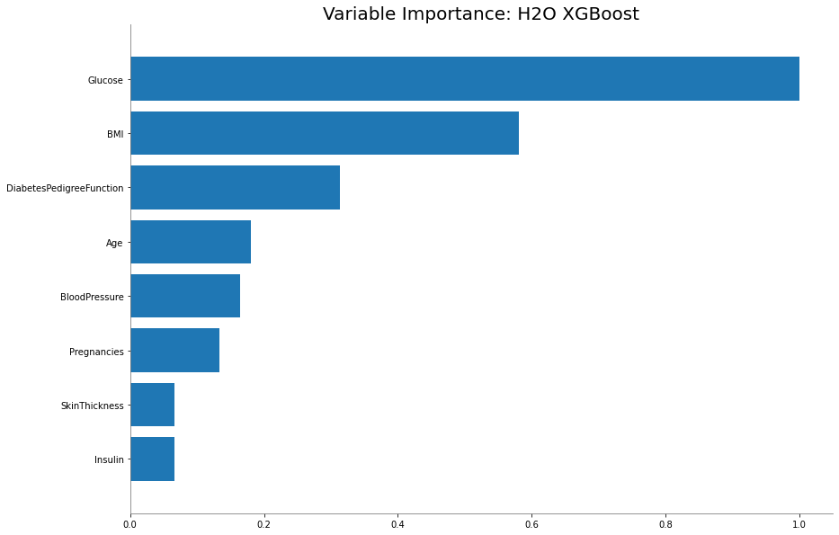
AutoML : Automatic Machine Learning:
From the H2O AutoML page,
from h2o.automl import H2OAutoML
aml = H2OAutoML(max_models = 10, max_runtime_secs=100, seed = 1)
aml.train(x=predictors, y=response, training_frame=train, validation_frame=valid)
AutoML progress: |
20:03:54.196: User specified a validation frame with cross-validation still enabled. Please note that the models will still be validated using cross-validation only, the validation frame will be used to provide purely informative validation metrics on the trained models.
████████████████████████████████████████████████████████| 100%
automl leaderboard:
lb = aml.leaderboard
lb
| model_id | auc | logloss | aucpr | mean_per_class_error | rmse | mse |
|---|---|---|---|---|---|---|
| StackedEnsemble_BestOfFamily_AutoML_20201107_200354 | 0.838498 | 0.471209 | 0.720251 | 0.225168 | 0.389759 | 0.151912 |
| DRF_1_AutoML_20201107_200354 | 0.837813 | 0.673743 | 0.750599 | 0.225158 | 0.390594 | 0.152563 |
| StackedEnsemble_AllModels_AutoML_20201107_200354 | 0.836755 | 0.473849 | 0.717937 | 0.233197 | 0.391309 | 0.153122 |
| GLM_1_AutoML_20201107_200354 | 0.831638 | 0.488798 | 0.716653 | 0.238204 | 0.395915 | 0.156749 |
| GBM_2_AutoML_20201107_200354 | 0.823921 | 0.492342 | 0.730483 | 0.240198 | 0.397899 | 0.158323 |
| GBM_1_AutoML_20201107_200354 | 0.823186 | 0.499362 | 0.730256 | 0.23354 | 0.398824 | 0.15906 |
| GBM_3_AutoML_20201107_200354 | 0.822944 | 0.491874 | 0.745621 | 0.245578 | 0.396877 | 0.157511 |
| XGBoost_2_AutoML_20201107_200354 | 0.822722 | 0.490048 | 0.729844 | 0.237186 | 0.402005 | 0.161608 |
| GBM_4_AutoML_20201107_200354 | 0.82235 | 0.492086 | 0.726875 | 0.241578 | 0.398974 | 0.159181 |
| GBM_5_AutoML_20201107_200354 | 0.817947 | 0.496638 | 0.68625 | 0.239211 | 0.403748 | 0.163012 |
metalearner = h2o.get_model(aml.leader.metalearner()['name'])
metalearner.std_coef_plot()
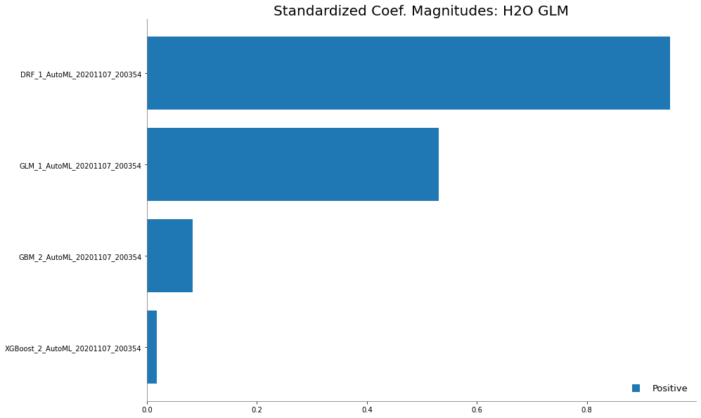